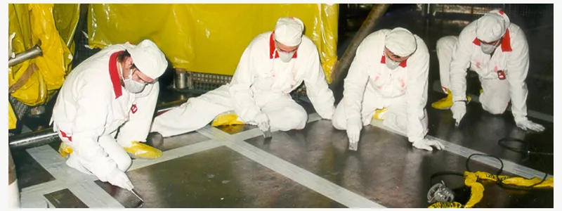

01
Divízia filtrácie
Filtrácia vzduchu
Dodávka a inštalácia systémov a komponentov pre filtráciu atmosférického vzduchu vo všeobecných aj špecifických priemyselných podmienkach.
Portfólio pôvodného webu zahŕňa predfiltre, kompaktné a panelové filtre, molekulárne a vreckové filtre, EPA, HEPA a ULPA filtre aj mobilné filtračné zariadenia. Spoločnosť uvádza spoluprácu so spoločnosťou Camfil.
- Predfiltre a všeobecná ventilácia
- Vreckové, kompaktné a panelové filtre
- Molekulárna filtrácia
- EPA, HEPA a ULPA filtre
- Mobilné filtračné zariadenia
- Návrh, dodávka a inštalácia systémov
Riešenia pre jadrové zariadenia
Pre stacionárne filtračné uzly pôvodný web opisuje meranie diferenčného tlaku, kontrolné a vzorkovacie otvory, mechanizmy na overenie tesnosti osadenia a bezkontaminačnú BIBO výmenu vložiek. Mobilné jednotky MoFi sú určené na lokálne odsávanie rádioaktívneho prachu pri rezaní, brúsení alebo pálení.
